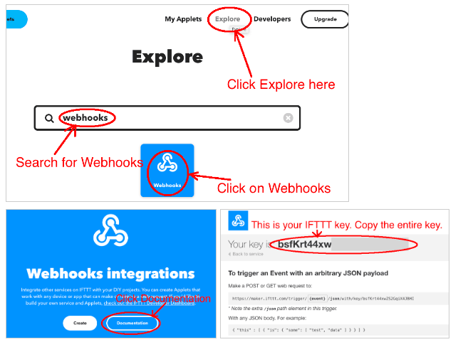
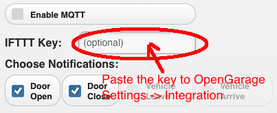
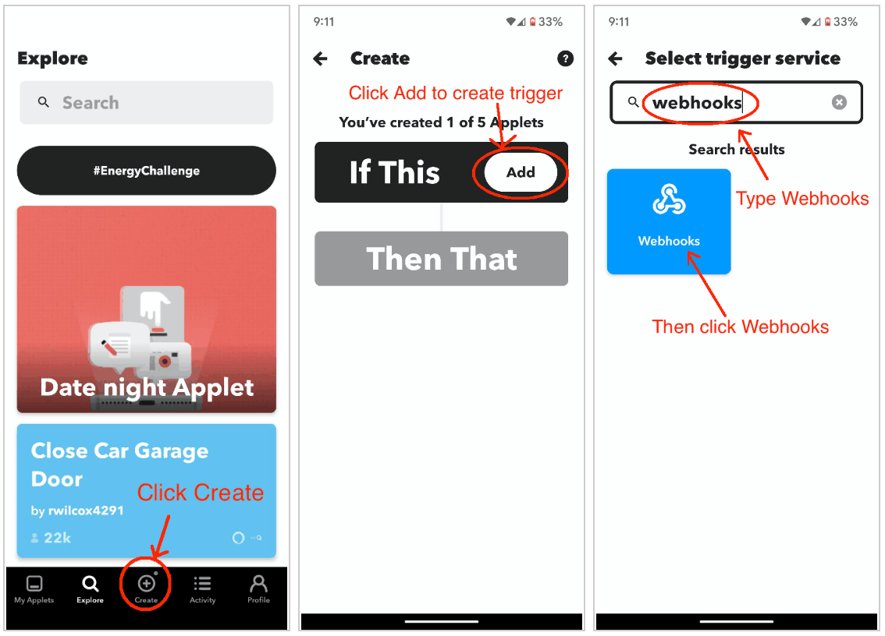
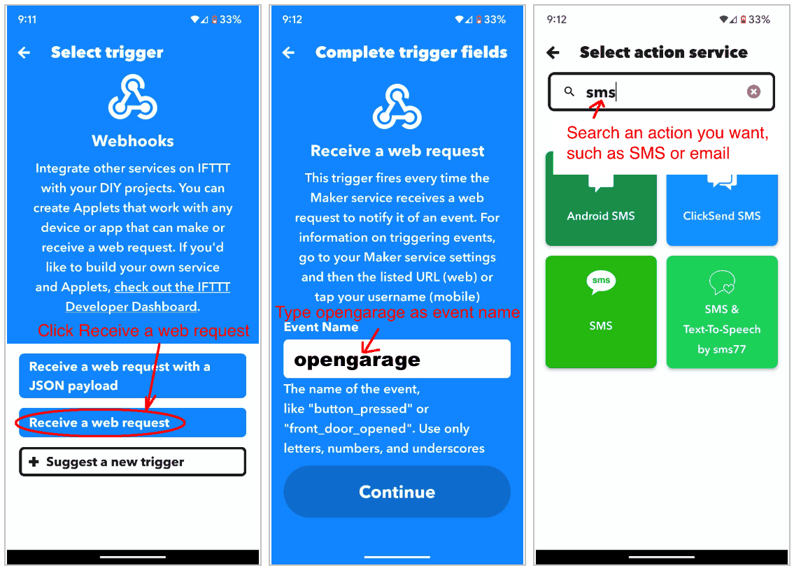
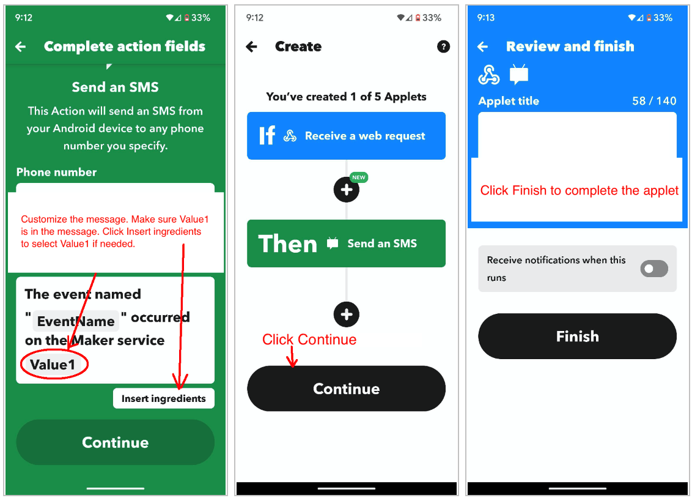

Using OpenGarage with IFTTT
OpenGarage has built-in support for email notifications and MQTT, and these are the recommended ways to receive notifications for most users. See Setting Up Email Notifications, and the MQTT section of the API reference for use with home automation systems. If you prefer IFTTT, OpenGarage can also send notifications through it.
An IFTTT applet connects a trigger (the “if this” part) to an action (the “then that” part). Here, an OpenGarage notification triggers a Webhooks event, and the action delivers a text, email, or push notification.
Step 1: Get Your IFTTT Key
- Open the IFTTT mobile app or visit ifttt.com, then sign in or create an account.
- Select Explore, search for Webhooks, and open that service.
-
Select Documentation to find your Webhooks key. Copy the entire key.

-
Open your OpenGarage settings, go to Integration, and paste the key into IFTTT Key. Choose the notification events you want, then enter your Device Key and save.

The screenshots show the original IFTTT and OpenGarage interfaces; their appearance may differ from current versions. On firmware 1.2.6 and later, a saved IFTTT key is not displayed. Leave the field blank to keep it, or enter a new key to replace it.
Step 2: Create an Applet
You can create the applet in a browser or in the IFTTT mobile app. The screenshots below use the app.
- Select Create, then add a trigger under If This.
-
Search for and select Webhooks.

-
Select Receive a web request.
- Enter
opengarageas the event name, exactly as shown. This is the event name used by the firmware. Continue to create the trigger. -
Under Then That, choose the notification service you want, such as SMS, email, or push notifications.

-
Configure the action. Keep
Value1in the message: OpenGarage sends its notification text in this parameter. If it is missing, use Insert ingredients to add it. -
Continue, review the applet, and select Finish. You can edit the action or message later.
